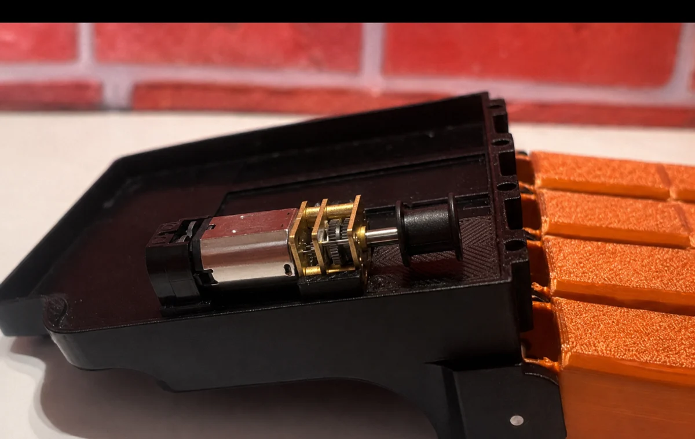
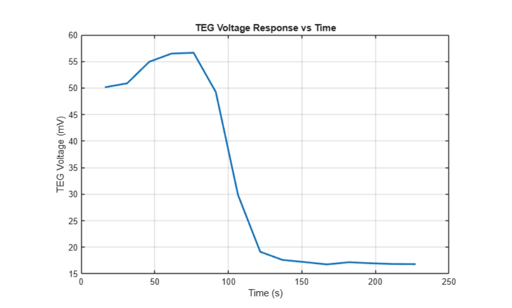
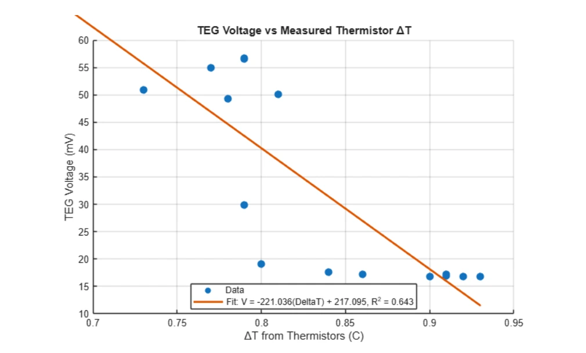
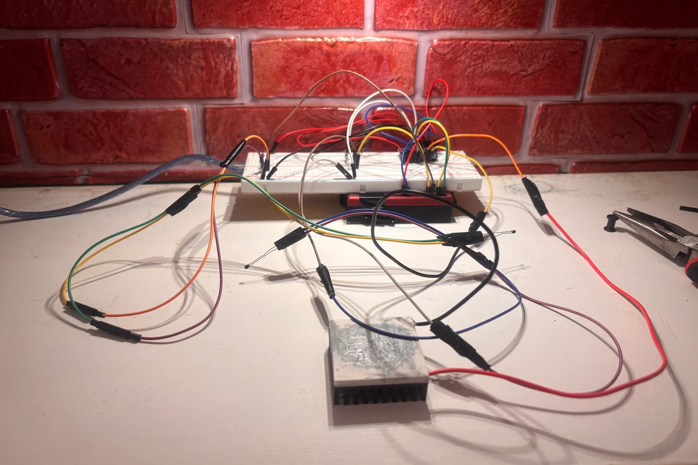
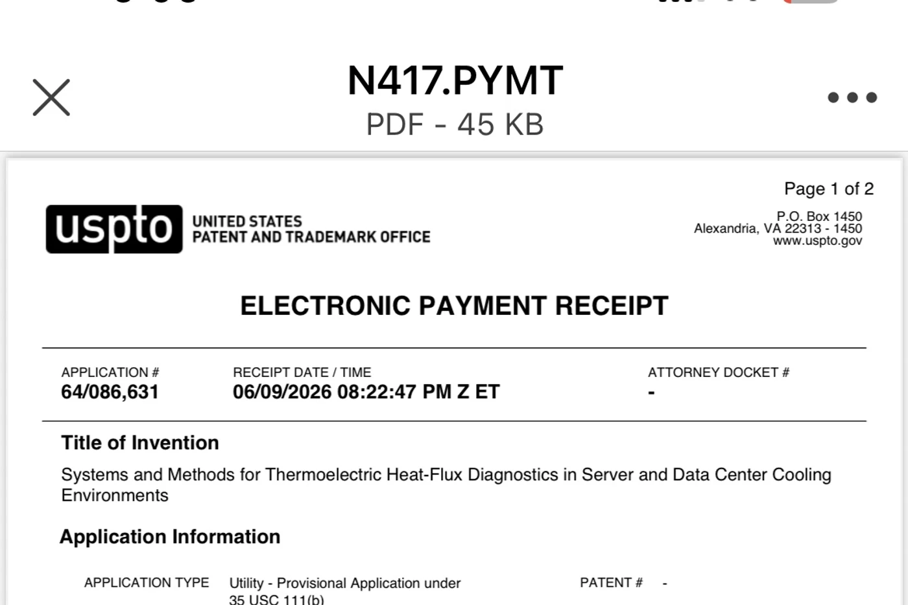

I build systems that turn hard-to-see signals into useful action.
I’m Nolan McMahon, a mechanical engineering senior at Wentworth Institute of Technology.
My work spans assistive technology, thermal diagnostics, embedded sensing, and practical
prototype development.
My focus: joining mechanical design, instrumentation, and controls into
prototypes that can be tested honestly—and improved around the people who may rely on them.
Selected work
Two projects. One engineering thread.
Both projects begin with a signal that is easy to miss: muscle activity in one case,
changing heat flow in the other. The work is about capturing that signal and making it
meaningful.
Current prototype · June 2026
Assistive technologyIEEE EMBS nominee
01
PULSE: Myoelectric Partial-Hand Prosthesis
A lightweight, four-finger prosthesis designed to preserve a user’s natural thumb while
restoring controlled flexion, extension, and basic grasping.
Three-link, tendon-driven finger architecture
Compact gearmotor actuation and ESP32-based control path
3D-printed, modular construction designed around fit and serviceability
Prosthetic Upper-Limb System with Electromyography
Finger loss can significantly affect grasping and object manipulation, while advanced
prosthetic options can remain costly and difficult to manufacture or repair. PULSE
explores a more accessible partial-hand system built around additive manufacturing,
compact actuation, and myoelectric intent.
Role
Mechanical engineering team member
Tools
SolidWorks, 3D printing, ESP32, EMG, MATLAB/Python
Status
Integrated mechanical prototype; controls and validation in progress
System architecture
From muscle intent to mechanical motion
Surface EMG captures forearm muscle activity. An analog front end conditions the small
biological signal before an ESP32 interprets it and commands individual motor drivers.
Each geared motor tensions a Dyneema tendon routed through a three-link finger.
01EMG electrodesCapture muscle activity
→
02Signal conditioningFilter and form an envelope
→
03ESP32 + driversTranslate intent into commands
→
04Tendon actuationProduce coordinated flexion
Wearable integration reveals alignment, clearance, attachment, and comfort constraints that isolated CAD cannot.

Compact motor and spool packaging inside the palm housing.Three-link fingers support coordinated motion and adaptive contact.
Design evolution
Print early. Learn from the fit. Repeat.
Week 1
Baseline housing
Established finger spacing, pin locations, and motor channels in CAD.
Week 2
Physical mock-up
Converted packaging assumptions into a testable print and exposed hidden clearances.
Week 3
Fit model
Created a repeatable residual-hand model to evaluate the socket and wearable interface.
Weeks 4–5
Subsystem convergence
Refined palm, pulley, motor, PCB, and EMG architecture around integration constraints.
Week 6+
Current prototype
Brought the residual model, housing, fingers, and actuation hardware into one wearable build.
Evidence of function
From biological signal to physical motion
These two demonstrations validate separate parts of the system: the EMG acquisition
path detects forearm muscle activity, while the single-finger mechanism demonstrates
tendon-driven joint motion. The next milestone is joining both into repeatable,
EMG-commanded motion across the integrated four-finger system.
Finger actuation: tendon tension produces coordinated movement through the three-link prototype.EMG acquisition: forearm electrodes produce a visible muscle-activation signal for the control pipeline.
My engineering work
Mechanism, packaging, and analysis
Within the five-person interdisciplinary team, my work has centered on palm-housing and
finger geometry, physical prototyping, tendon and return-mechanism development,
component integration, and analytical modeling that relates motor torque to fingertip
force through the finger Jacobian.
Responsible development
Accessibility does not excuse weak validation.
PULSE is a student research prototype—not a clinically approved medical device. Future
work requires measured grip force, cycle life, safe-state behavior, electrical and
battery checks, fit and pressure evaluation, and appropriate clinical/user oversight.
External milestone
On June 17, 2026, PULSE was selected as one of Wentworth Institute of Technology’s
nominees for the 2026 IEEE EMBS Boston Senior Capstone Project Award.
Case study 02 · Independent project
Thermal gradients as a diagnostic signal
Servers depend on airflow, contact quality, heat sinks, and thermal interfaces. This
project asks whether a calibrated thermoelectric generator can provide a secondary
signal when that local heat-transfer path changes.
Temperature alarms may identify overheating without directly describing a localized change in the heat-transfer path.
02
The insight
A TEG produces voltage across a thermal gradient. That voltage can be treated as a sensing signal rather than harvested power.
03
The challenge
The signal is small and depends on calibration, thermal contact, airflow, noise, and the resistance of the complete thermal path.
The physical server test: a TEG and black heat sink installed in the processor cooling region with voltage and thermistor acquisition.
Physical test · June 19, 2026
Real hardware. Real measurements.
The standalone MATLAB dataset came from this server-mounted experiment. It recorded TEG
voltage and thermistor temperatures over approximately 230 seconds.
16.77–56.66Measured TEG voltage range, mV
32.46Mean measured TEG voltage, mV
0.73–0.93Measured thermistor ΔT range, °C
0.643Preliminary voltage/ΔT fit, R²
Measured response
The signal changed substantially during the test.
Measured voltage fell from the mid-50 mV range to roughly 17 mV as the measured
thermistor temperature difference increased. The negative trend is useful evidence,
while its physical cause and repeatability still require controlled follow-up testing.

Measured TEG voltage response over time.

Preliminary relationship between measured voltage and thermistor ΔT.
Important distinction: voltage and thermistor temperatures are measured
values. Heat-flux values derived using provisional Seebeck and thermal-resistance
constants remain estimates until calibration.
Instrumentation revision
Improving small-signal resolution
The updated prototype adds a higher-resolution ADS analog-to-digital converter to
capture millivolt-scale TEG signals more accurately than the Arduino Uno’s native
10-bit ADC. This bench architecture supports the next round of calibration and
multi-node development.
Controlled hot-side/cold-side calibration
Repeatable airflow and thermal-contact cases
Expansion toward four sensing locations
SolidWorks thermal and ANSYS Fluent CFD comparison

Updated data-acquisition bench with the ADS-based small-voltage measurement path.

Cropped filing receipt shown without personal correspondence information.
Intellectual property milestone
U.S. provisional patent application filed June 9, 2026
Application
64/086,631
Type
Utility provisional application under 35 U.S.C. §111(b)
Inventor / filer
Nolan Ryan McMahon
“Systems and Methods for Thermoelectric Heat-Flux Diagnostics in Server and Data Center
Cooling Environments”
This milestone reflects an application filing; it does not represent an issued patent.
Investigated vehicle collisions and mechanical failures, interpreted physical and digital evidence, and prepared code-compliance documentation for engineering review.
Integra Mission Critical · Austin, TX
Commissioning Intern
Supported commissioning of a live 80 MW data center, tracked more than 400 system logs, and identified installation and safety issues before energization and startup.
Wentworth Institute of Technology · Boston, MA
B.S. Mechanical Engineering
Coursework and project work in heat transfer, fluid mechanics, FEA, mechanical design, additive manufacturing, instrumentation, and embedded systems.
About me
I’m happiest where a physical prototype meets a meaningful problem.
My engineering style is practical and iterative: understand the system, build a version,
measure what happens, and let the failure modes improve the next design. Teaching swim
lessons showed me how much careful, patient work can change someone’s confidence. I
want my engineering career to carry that same direct connection to people.

 Current prototype · June 2026
Current prototype · June 2026